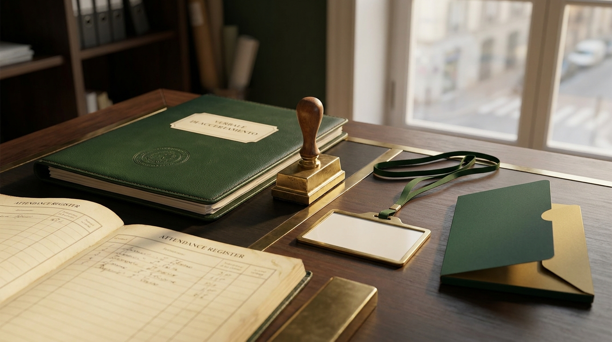

Controlli dell'Ispettorato del Lavoro: poteri, obblighi e cosa fare
Una visita ispettiva può cogliere impreparato anche il datore di lavoro in regola. Conoscere i poteri dell'Ispettorato nazionale del lavoro, i documenti richiesti e i diritti durante l'accesso aiuta a gestire il controllo senza errori. Vediamo come si svolge la verifica, quali enti intervengono e come prepararsi in concreto.

Cosa è e cosa fa l'Ispettorato del lavoro
L'Ispettorato nazionale del lavoro (INL) è l'agenzia che coordina la vigilanza in materia di lavoro, salute e sicurezza, previdenza e assicurazione. Opera spesso in raccordo con INPS, INAIL e, per i profili sanitari, con le ASL.
L'attività ispettiva ha due funzioni: accertare il rispetto delle norme e contrastare il lavoro irregolare. Il personale ispettivo è qualificato come ufficiale di polizia giudiziaria per i reati di competenza, e ciò amplia i poteri esercitabili durante l'accesso.
Inquadramento normativo
La cornice principale è il d.lgs. 81/2008, il Testo unico in materia di salute e sicurezza, che disciplina gli obblighi del datore di lavoro e i poteri di vigilanza degli organi competenti. Il d.lgs. 149/2015 ha riorganizzato i servizi ispettivi istituendo l'INL e razionalizzando le competenze prima frammentate tra più enti.
Il d.l. 146/2021 ha rafforzato gli strumenti di contrasto al lavoro sommerso e alle violazioni sulla sicurezza, ampliando l'ambito del provvedimento di sospensione dell'attività imprenditoriale. La sospensione può scattare, ad esempio, in presenza di una quota rilevante di lavoratori “in nero” o di gravi violazioni in materia antinfortunistica.
Come si svolge il controllo
L'accesso ispettivo può essere programmato o, più spesso, senza preavviso: la verifica a sorpresa è funzionale a fotografare la situazione reale dell'azienda. Gli ispettori, qualificandosi, possono entrare nei luoghi di lavoro, anche all'esterno della sede, ovunque si svolga l'attività.
I poteri tipici comprendono: l'identificazione delle persone presenti, l'acquisizione di dichiarazioni dai lavoratori, l'esame della documentazione obbligatoria, l'accesso ai sistemi informatici aziendali e l'acquisizione di copie. Le dichiarazioni rese dai lavoratori durante l'ispezione hanno valore probatorio e raramente possono essere ritrattate senza conseguenze.
Al termine, l'ispettore redige un verbale di primo accesso che documenta le attività svolte e le persone identificate. Eventuali contestazioni confluiscono poi nel verbale unico di accertamento e notificazione, che indica gli illeciti rilevati, le sanzioni e i termini per regolarizzare o difendersi.
Implicazioni pratiche per il datore di lavoro
Per chi gestisce un'impresa, il controllo non si esaurisce nel momento della visita: gli effetti si misurano nelle settimane successive, tra diffide, prescrizioni e ricorsi.
La documentazione è il fattore decisivo. Libro unico del lavoro, comunicazioni di assunzione, prospetti orari, documento di valutazione dei rischi e attestati di formazione devono essere disponibili e coerenti tra loro. Incongruenze tra ciò che risulta sulla carta e ciò che gli ispettori osservano sul campo sono la prima fonte di contestazione.
Va ricordato che esistono strumenti deflattivi: la diffida obbligatoria consente di sanare alcune violazioni regolarizzando la posizione e versando la sanzione in misura ridotta. Sfruttarla nei termini evita aggravi e contenziosi.
Cosa fare in concreto
- Verificate subito le credenziali degli ispettori e annotate ente di appartenenza, nominativi e oggetto del controllo.
- Collaborate senza ostacolare: impedire o ritardare l'accesso integra un illecito autonomo e peggiora la posizione aziendale.
- Tenete aggiornata la documentazione obbligatoria e custoditela in modo ordinato e immediatamente reperibile, anche in formato digitale.
- Leggete con attenzione il verbale prima di firmarlo e fate verbalizzare eventuali osservazioni; la firma non equivale ad accettazione degli addebiti.
- Rispettate i termini per diffida, ricorso amministrativo o opposizione: la decadenza preclude la difesa nel merito.
Un controllo ben gestito riduce il rischio di sanzioni evitabili e, soprattutto, mette l'azienda nelle condizioni di esercitare pienamente i propri diritti difensivi. Consigliamo di valutare ogni verbale con un professionista prima di assumere decisioni, perché i termini per reagire sono spesso brevi e perentori.
Disclaimer
Contributo informativo a cura di Tamburro & Partners - Avv. Giuseppe Tamburro. Non costituisce parere legale.
Ogni storia di lavoro ha i suoi tempi.
Se gestisci HR e vuoi un confronto su contenzioso, ispezioni o licenziamenti, scrivi allo studio. Ti rispondiamo entro un giorno lavorativo.